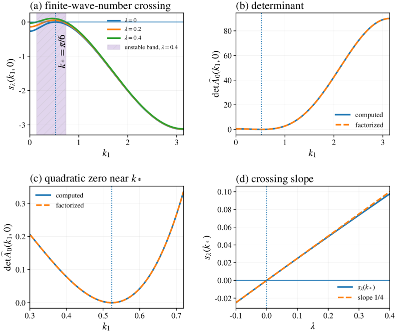
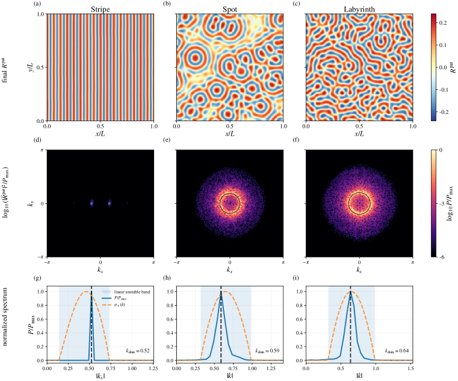
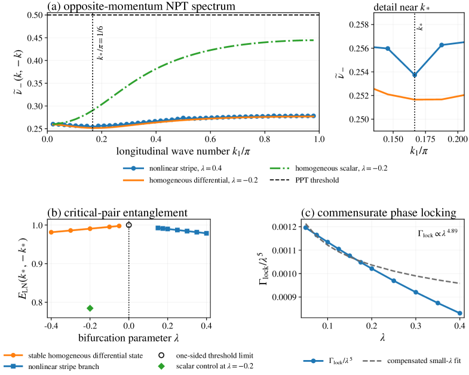

A Lean 4 formalization accompanies the numerical source and reference data for the quantum Turing pattern construction in the author's repository.
Abstract
We construct quantum Turing patterns in Lindblad lattice dynamics and establish a rigorous theory of their nonlinear order and quantum fluctuations. For an explicit completely positive family with finite-range couplings, the first-moment equations undergo a supercritical instability at a nonzero wave number and admit analytic site- and bond-centered commensurate stripe branches. These branches are locally asymptotically stable in their reflection-fixed period-cell spaces, and projected coherent states exhibit extensive Bragg order on every bounded time interval in the semiclassical limit. We prove $O(N^{-1/2})$ convergence of microscopic covariances to a nonautonomous Gaussian Lyapunov flow, transferring strict partial-transpose uncertainty violations to sufficiently large $N$. In the homogeneous Gaussian sector, a single dimensionless ratio controls both the Turing stability determinant and the logarithmic negativity of opposite momenta, relating wavelength selection directly to quantum entanglement. Differential transport shifts the strongest opposite-momentum correlations from the infrared to the selected Turing scale. Numerical continuation and two-dimensional simulations display stripe, spot, and labyrinth morphologies whose Fourier modes and fluctuation spectra concentrate at the same selected wave numbers.
Problem
It is unclear whether the classical Turing pattern-selection mechanism, where differential transport destabilizes a homogeneous state at nonzero wave number, can emerge from quantum Markov (Lindblad) lattice dynamics with a rigorous nonlinear and fluctuation theory.
Approach
An explicit completely positive family with finite-range couplings is constructed so its first-moment equations undergo a supercritical instability at a fixed nonzero wave number, yielding analytic commensurate stripe branches. Local asymptotic stability and extensive Bragg order are proven in the semiclassical limit. Microscopic covariance convergence to a Gaussian Lyapunov flow is established, and numerical continuation plus 2D simulations explore stripe, spot, and labyrinth morphologies. A Lean 4 formalization is provided alongside the numerical source code.

Figure 2. Finite wave-number Turing point. (a) The critical eigenvalue crosses zero at k_{*}=\pi/6 while the homogeneous mode remains stable; the shaded interval is the unstable band at \lambda=0.4 . (b,c) The computed determinant agrees with the exact factorization and has a quadratic zero at k_{*} . (d) The critical eigenvalue crosses with slope 1/4 .
Results
Microscopic covariances converge at rate O(N^{-1/2}) to the Gaussian Lyapunov flow, transferring partial-transpose uncertainty violations to large N. A single dimensionless ratio governs both the Turing stability determinant and opposite-momentum logarithmic negativity, and simulated Fourier modes and fluctuation spectra concentrate at the same selected wave numbers.

Figure 1. Quantum Turing morphologies and selected wave numbers in one Lindblad family. The top row shows the first-moment fields, the middle row their two-dimensional Fourier power, and the bottom row the selected spectra together with the linear unstable bands. The stripe selects the pair \pm k_{*} , while the isotropic spot and labyrinth regimes concentrate power on the selected wave-number she

Figure 4. Momentum-resolved Gaussian entanglement and phase locking. (a) Longitudinal opposite-momentum spectra for the nonlinear stripe, the homogeneous differential-transport system, and a scalar-transport control; the detail panel resolves the neighborhood of k_{*} . (b) Critical-pair logarithmic negativity across the homogeneous threshold and along the continued patterned branch. (c) Phase-loc